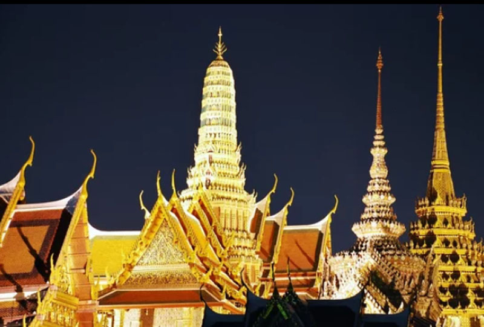
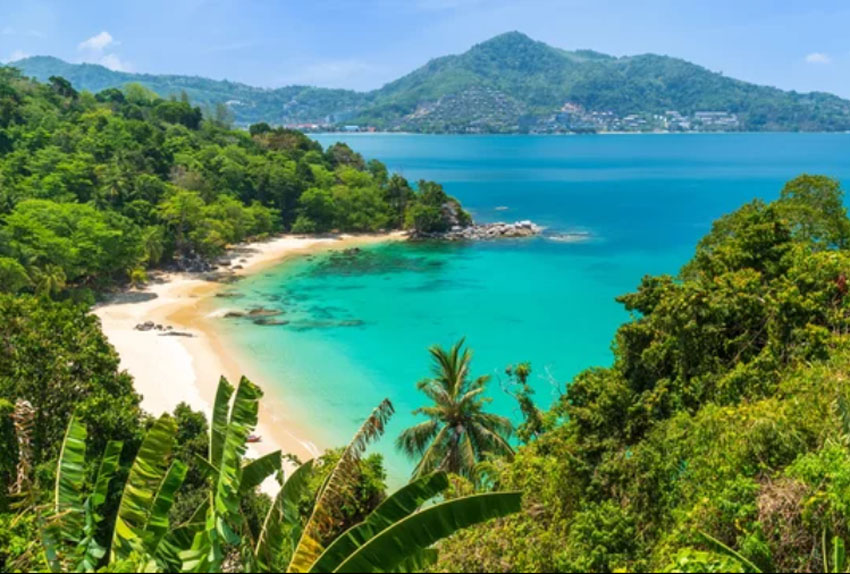
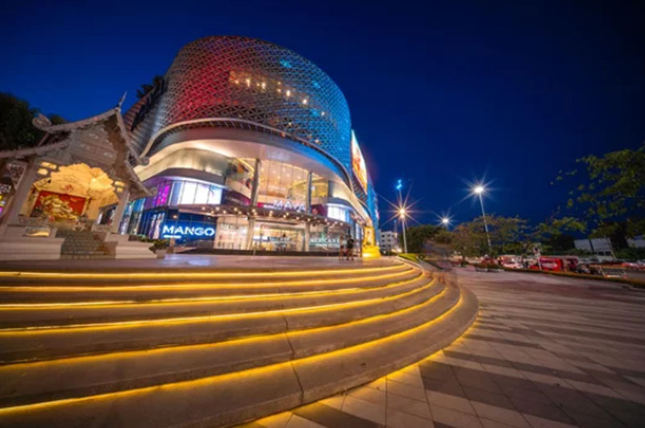
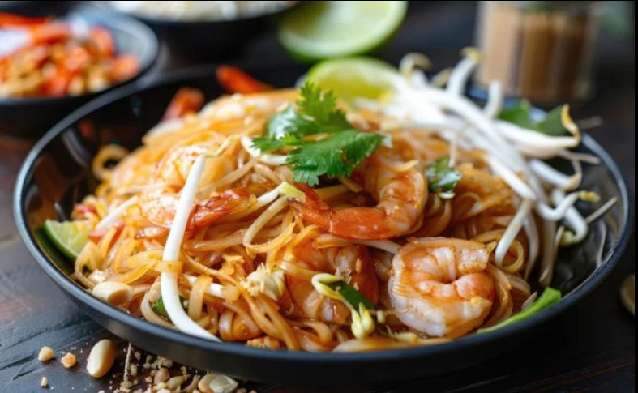
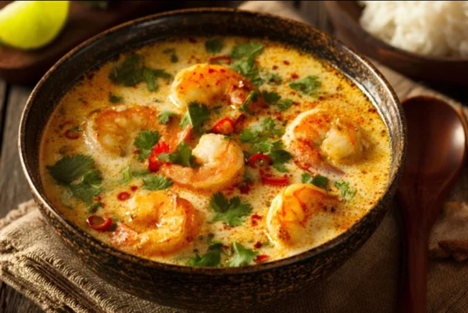

Unveiling the Past
Chronicles of Ancient Siam
Journey through the silent echoes of fallen kingdoms, where weathered brick and golden spires tell stories of a glorious civilization.
A Lineage of Dynasties: The Shaping of Thailand
Historical Axis
Dynasties that Shaped a Nation From the rise of the Ayutthaya Kingdom to the legacy of the Thonburi Kingdom and the enduring reign of the Chakri Dynasty, Thailand’s story unfolds through cycles of conquest, resilience, and renewal.

Chiang Mai
The Rose of the North. Here, the air is cooler and the pace is slower. Ancient Lanna temples stand guard over a city known for its artisan craft and spiritual tranquility.
Doi Inthanon
Experience the highest peak in Thailand with private sunrise treks.
Sunday Walking Street
Exclusive access to heritage silk weavers and local silver artisans.
Ayutthaya: The Cosmopolitan Capital
Founded in 1350, Ayutthaya became the second capital of the Siamese Kingdom. Strategically located on an island surrounded by three rivers, it grew into a global center for trade and diplomacy.
Wat Chaiwatthanaram
A stunning Khmer-style temple reflecting the kingdom's cosmology and spiritual depth.
Wat Phra Si Sanphet
The holiest temple on the site of the old Royal Palace, characterized by its three iconic chedis.


Bangkok
Golden temples, riverfront traditions, and a skyline that never stands still—Bangkok moves effortlessly between past and future.


Elevated Evenings
Rooftop Lounge Access

Curated Experience
Private night market tours with expert gastronomes through Yaowarat Road.
The breadth that embodies Thailand’s diversity and natural richness.
Regional Axis
From the vibrant shores of Phuket to the misty mountains of Chiang Mai and the fertile plains of the Chao Phraya basin, discover a land where culture, landscape, and tradition intertwine to reveal the many faces of Thailand’s diversity and natural abundance.

Phuket
From the lively shores of Patong Beach to the quiet elegance of hidden coves, Phuket unfolds as a tapestry of sun, sea, and sensation. By day, turquoise waters and limestone silhouettes invite exploration.
Siam District
The epicenter of mega-malls and vibrant youth culture in Bangkok.Standing at the absolute forefront of global retail and style.Where high-end consumption meets the pulse of the city's future.

Nimmanhemin
The creative epicenter where Chiang Mai’s heritage meets modern lifestyle.A boutique labyrinth of artisanal coffee roasters and avant-garde art galleries.The ultimate sanctuary for digital nomads and trendsetting local creators.
Harmony of Spice & Elegance
From fragrant soups and wok-fired classics to refined tropical desserts, Thailand’s cuisine is a delicate balance of heat, sweetness, and aroma—rooted in tradition, yet alive in every street corner.

Pad Thai
A culinary icon featuring the perfect harmony of sweet, sour, and spicy flavors.

Tom Yum Goong
One of the world’s three great soups, celebrated for its bold aroma and zesty citrus notes.
Mango Sticky Rice(Khao Niao Mamuang)
A beloved dessert where the creamy sweetness of coconut meets perfectly ripened mango.
タイ王国の歴史
Kingdom of Thailand
From ancient capitals to the modern nation, Thailand’s history unfolds through dynasties, resilience, and an enduring cultural identity rooted in both tradition and chang
古代
ドヴァーラヴァティー王国（6世紀～11世紀）
モン族による国家で、仏教文化が栄えた。
シュリーヴィジャヤ王国の影響（7世紀～13世紀）
タイ南部が海上交易を通じて影響を受ける。
ハリプンチャイ王国 （7世紀～13世紀）
北部でモン族が築いた王国。
中世
スコータイ王朝 （1238年～1438年）
タイ族による最初の王朝で、上座部仏教が国教として確立。
14世紀に南のアユタヤ王朝に飲み込まれ、早くに消滅しました。
ラーンナー王朝（1292年～1775年）
北部チェンマイを中心に繁栄。
16世紀半ば、ラーンナーは隣国のビルマ（現在のミャンマー）に征服され、そこから約200年間、チェンマイを中心とする北部はビルマの属国となる。
アユタヤ王朝（1351年～1767年）
タイ中部を中心に栄え、国際貿易が盛んだった。
17世紀山田長政が活躍
1767年ミャンマーのコンバウン朝の侵入を受け、滅亡
近世
トンブリー王朝 （1767年～1782年）
アユタヤ滅亡後、タークシン王が建国。
ラタナコーシン（チャクリー）王朝 （1782年～現在）
現在の王朝で、バンコクを首都とする。
ラーンナー王朝（1292年～1775年）
トンブリー〜チャクリー時代：タイへの合流
ビルマ（ミャンマー）支配からの離脱（1774年）
1774年に当時の指導者カワィラらが南方シャムのトンブリー王朝（タクシン王）の支援を受けて反乱を起こし、ビルマ軍を撃退
シャム（タイ）の保護国化
ビルマ追放後、ラーンナーはトンブリー王朝、およびそれに続く現在のチャクリー王朝（ラッタナーコーシン王朝）の朝貢国（保護国）となる。
半独立状態の維持: カワィラによって興された「チェットトン王家」がチェンマイ、ランプーン、ランパーンなどを統治し、独自の文化や制度を保つ半独立的な状態が続きました。
完全な統合: 19世紀末、ラーマ5世（チュラーロンコーン大王）による「チャクリー改革」が進められる中で中央集権化が図られ、20世紀初頭までにタイ王国の一部として完全に組み込まれました。
近現代・現代
シャム王国 （19世紀～1939年）
欧米列強の植民地化を免れつつ、近代化を進める。
1932年立憲革命:人民党（軍人と文官のグループ）が、絶対王政を廃止し、絶対君主制から立憲君主制へと移行させたクーデターあるいは革命である。
タイ王国（1939年6月 〜 1945年9月）
ピブーン政権によるナショナリズムの高揚。「シャム」から「タイ」へ。立憲君主制を採用。
シャム王国1945年9月 〜 1949年5月
終戦後、軍国主義的なイメージを払拭し、連合国との関係を修復するために旧国号へ戻した期間。
タイ王国1949年5月 〜 現在
ピブーンの権力復帰に伴い、再び「タイ」に改称。以降、現在まで定着。
ラーマ9世（プミポン国王）やラーマ10世（ワチラーロンコーン国王）のもとで発展を続ける。
タイの歴史は、仏教文化や国際貿易、そして独立を維持した外交政策が特徴的です。
なぜ「一つのタイ」になったのか？
現在の「タイ王国」として完全に一つにまとまったのは、実はわずか120〜130年ほど前（19世紀末〜20世紀初頭）のことです。
それまでの関係：ラーマ1世の時代から、ラーンナーはバンコクの王朝を「親分」と仰ぐ保護国（属国）のような立ち位置でしたが、内政はラーンナーの王様が独自に行っていました。
統合のきっかけ：イギリスやフランスといった西洋列強が植民地を広げてきたため、「バラバラでは国を守れない」と危機感を持ったラーマ5世が、地方の王様たちの権限を中央に集め、現代的な「タイ王国」という一つの国に作り変えました。
現代への影響
そのため、歴史的に見ると「バンコクの王朝がラーンナーを仲間に加え、一つの近代国家を作り上げた」という形になります。今でもチェンマイなど北部の人々が「自分たちはラーンナーの末裔である」という強い誇りと独自の文化（言葉や食）を持っているのは、この「別の国だった期間」が非常に長かったからです。
一度も西洋列強の植民地にならなかった国
タイは東南アジアで唯一、一度も西洋列強の植民地にならなかった国として知られており、その点は日本と非常によく似ています。ただ、その「守り方」にはタイ独自の非常に巧みな戦略がありました。
「外交」で生き残った
日本が武力（明治維新後の軍事力）で対抗したのに対し、タイは「領土を差し出してでも、国本体を守る」という柔軟な外交を選びました。当時のラーマ5世（チュラロンコン大王）は、フランスやイギリスに対し、現在のラオスやカンボジア、マレー半島の一部といった周辺の領土を割譲することで、国の心臓部であるタイ本土の独立を維持しました。
「緩衝地帯」としての役割
当時、東のカンボジア・ベトナムはフランス、西のビルマ・南のマレーシアはイギリスが植民地にしていました。両大国の間でタイが独立を保っていたのは、イギリスとフランスが「直接ぶつかるのを避けるためのクッション（緩衝地帯）」としてタイを残しておくことに合意したという側面もあります。
近代化の断行（チャクリー改革）
日本が明治維新で近代化したように、タイもラーマ5世のもとで鉄道、郵便、教育、法律などを急速に西洋化しました。「自分たちは文明国である」と示すことで、西洋諸国に侵略の口実を与えないようにしたのです。タイがこの危機を乗り越えるために戦ったラーマ5世は、今でも「最高の名君」としてタイの至る所に写真が飾られています。
日本との共通点
王室・皇室の存在: どちらも伝統的な君主制を守りながら近代化に成功しました。
誇り: 植民地にならなかったことは、現代のタイの人々の大きな誇り（「タイ」という言葉自体に「自由」という意味があります）になっています。
タイでは、1932年の立憲革命以来、軍事クーデターが政治状況を打開する「タイ式民主主義」の一環として繰り返されてきました。
1932年：立憲革命（すべての始まり）
内容: 人民党（軍人と文官のグループ）が、絶対王政を廃止し立憲君主制へ移行させたクーデター。
意義: タイ近代史の転換点であり、以降、実権が王室から軍部や官僚へと移る流れが定着
1930年代〜1970年代：軍部主導の時代この期間は軍内部の派閥争いや、社会主義への警戒を背景としたクーデターが頻発しました
1933年: 王党派による反乱（ボウォラデートの反乱）や、人民党内の対立によるクーデターが続発。
1947年: 文民政権を倒し、ピブン元首相らが復権。以降、長期間の軍事独裁体制の基礎となります。
1957年・1958年: サリット将軍によるクーデター。「開発独裁」が敷かれ、国王の権威が再び高められる時期となりました。
1973年〜1992年：民主化運動と反動1973年（血の土曜日）: 学生主導の大規模デモにより軍事政権が崩壊。一時的に民主的な政治が行われました。
1976年: タマサート大学での虐殺事件を経て、軍が再び実権を掌握。
1991年: チャチャイ政権を軍が打倒。しかし翌1992年の大規模デモ（「暗黒の5月」）と国王の調停により、軍が一度政治から身を引く形となりました。
2000年代以降：混迷の再燃タクシン元首相派と、それに対抗する保守派（軍・王室派）の対立が深まりました。
2006年: 外国訪問中だったタクシン首相を軍が解任。以降、親タクシン派と反タクシン派（赤シャツ・黄シャツ）の激しい対立が続きます。
2014年: インラック政権（タクシン氏の妹）末期の混乱を受け、プラユット陸軍司令官がクーデターを宣言。これが直近の軍事クーデターであり、現在の政権構造にも大きな影響を与えています。
「ハイブリッドの達人」としてのタイ
タイの人は、異なるものを無理に一つにまとめようとするのではなく、「混ざった状態のまま、いいとこ取りで共存させる」のが本当に上手です。まさに「ハイブリッドの達人」と言えるかもしれません。
タイ流ハイブリッドのいろいろ
政治: 「選挙（民主主義）」と「クーデター・王権（伝統権威）」が入り混じり、時に衝突しながらも、どこかでバランスを取り続けている。
・「立憲革命（1932 Revolution）」と書かれることが多いですが、実際には「軍人によるクーデターの形をとった、制度上の革命」という、極めてタイらしいハイブリッドな出来事でした。タイは「王様は残す（敬う）、でも実権はもらう」という、究極の折衷案（立憲君主制）を選びました。この「伝統と近代の同居」こそがタイ・スタイルの原点です。 「軍事力」を使った「制度改革」普通、軍事力での政権奪取は「野蛮なクーデター」とされますが、1932年はそれを使って「憲法を作る（文明化する）」という高度にインテリな目的を果たしました。「力（軍）」と「論理（法）」のハイブリッドです。
・名前が変わっても「本質」は残す：1939年に国名を「タイ」に変え、モダンでナショナリズムの強い国を演出しましたが、中身は以前からの「官僚社会」や「王室への敬愛」をしっかり残しました。「外見は新しく、中身は古き良きものを守る」というハイブリッド戦略です。
宗教: 仏教を信じながら、ヒンドゥー教の神様に祈り、精霊（ピー）の存在も本気で信じている。
歴史: かつての敵国（ラーンナーやアユタヤ）のアイデンティティを保ったまま、一つの「タイ」という国に収まっている。
食文化: 中華（麺や炒め物）とインド（カレー）と地元のハーブを混ぜて「タイ料理」に昇華させている。
「なぜそんなに「ハイブリッド」なの？
タイには「マイペンライ（気にしない、大丈夫）」という有名な言葉がありますが、この大らかさが「自分たちと違うもの」を排除せず、「とりあえず混ぜてみよう」という柔軟性を生んでいる気がします。西洋のように「白か黒か」をはっきりさせるのではなく、「グレーだけど、これが一番しっくりくるよね」という絶妙な着地点を見つけるのがタイ人の知恵なのかもしれません。政治不安が続いても国が壊れないのも、ある意味この「ハイブリッドな柔軟性（しなやかさ）」があるからこそ、と言えそうです。